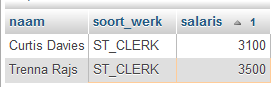
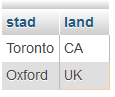

Opdrachten sectie 3#
Voor de interactieve versie, zie: Notebook Opdrachten 3
%LOAD ../data/employees.db
Opdracht 21
Query 1: Toon de volledige naam in één kolom, het job_id en het salaris van alle werknemers die ‘ST_CLERK’ zijn en een salaris hebben hoger dan 3000. Let op de kolomnamen en sorteer op salaris.

Opdracht 22
Query 2: Toon de city en het country_id van de tabel locations van alleen maar de landen Canada (CA) of het Verenigd Koninkrijk (UK).

Opdracht 23
Query 3: Toon de job_title, min_salary, max_salary, het verschil tussen max_salary en min_salary van de tabel jobs waarvoor geldt dat het verschil groter is dan 6000 en de job_title ongelijk is aan ‘President’. Let op de kolomnamen en sorteer op het verschil tussen max_salary en min_salary van hoog naar laag.
Opdracht 24
Query 4: Toon employee_id, last_name en salary zoals in het voorbeeld van alle werknemers waarvoor het department_id niet NULL is, het department_id niet gelijk is aan 10, 20 of 50 en het salaris lager is dan 10000. Sorteer op het salaris van hoog naar laag.
Opdracht 25
Query 5: Toon alle manager_id’s behalve die van 100, 102, 103, 201 en 205. De manager_id’s mogen maar één keer getoond worden in de lijst.
Opdracht 26
Query 6: Toon vijf achternamen achter elkaar van de employees waarvan de achternaam met een letter ‘F’ of hoger begint gesorteerd op achternaam.
Opdracht 27
Query 7: Toon first_name, last_name en salary van alle werknemers die tussen de 12000 en 20000 verdienen of een voornaam hebben die met een ‘E’ begint. Sorteer op salaris en daarna op voornaam. De gegevens komen uit de tabel employees.
Opdracht 28
Query 8: Toon de last_name, salary, bonus en het totale salaris van alle employees die een bonus hebben. Let op de kolomnamen, zorg dat het woordje “dollar” achter het totale salaris komt en sorteer op het totale salaris van hoog naar laag. Maar let op! Zoals je ziet is er niet gesorteerd op kolom vier. Dat lukt niet want dat is een geconcateneerde kolom met cijfers en tekst (dollar) en dan wordt dat tekst. Dat moet je dus anders oplossen!
Opdracht 29
Query 9: Toon de naam, het e-mailadres en het telefoonnummer zoals in het voorbeeld van alle werknemers die een telefoonnummer hebben zonder een vijf (‘5’) in het nummer.
Opdracht 30
Query 10: Welke werknemers zijn er allemaal op de zeventiende van een maand aangenomen? De gegevens komen uit de tabel employees en er is gesorteerd op last_name.